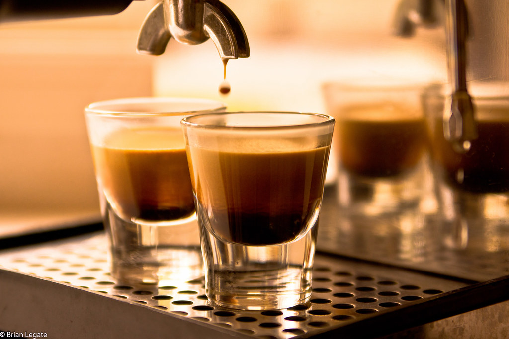
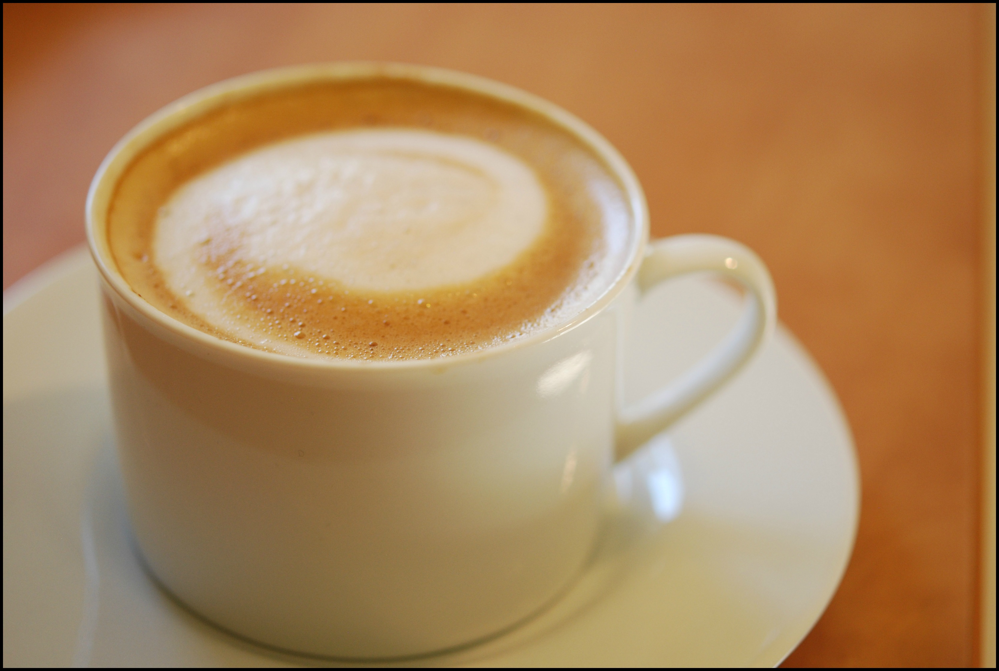

- Moccha
-
Mocha is an intensely flavorful coffee blend that originated in Ethiopia and was brought over to Europe by traders from Yemen in the late 1700s. It is made up of espresso and hot chocolate milk.
- Cappucinho
-
A cappuccino is an espresso-based coffee drink that originated in Austria and was later popularized in Italy and is prepared with steamed milk foam (microfoam).
- espresso
-
Espresso is a coffee-brewing method of Italian origin, in which a small amount of nearly boiling water (about 90 °C or 190 °F) is forced under 9–10 bars of pressure through finely-ground coffee beans. Espresso can be made with a wide variety of coffee beans and roast degrees.

- double espresso
-
A double espresso is typically exactly what it sounds like: two shots of espresso. That means about two ounces of espresso and 128 milligrams of caffeine.A double espresso is also called a “doppio,” which means double in Italian.
- latte
-
Caffè latte , often shortened to just latte in English, is a coffee beverage of Italian origin made with espresso and steamed milk. Variants include the chocolate-flavored mocha or replacing the coffee with another beverage base such as masala chai (spiced Indian tea), mate, matcha, turmeric or rooibos; alternatives to milk, such as soy milk or almond milk, are also used.

Steps necessary
- choose the coffee
- order the coffee
- deliver the coffee
- enjoy the coffee

 Brewing happiness since 1985
Brewing happiness since 1985